AWS Agentic AI Services#
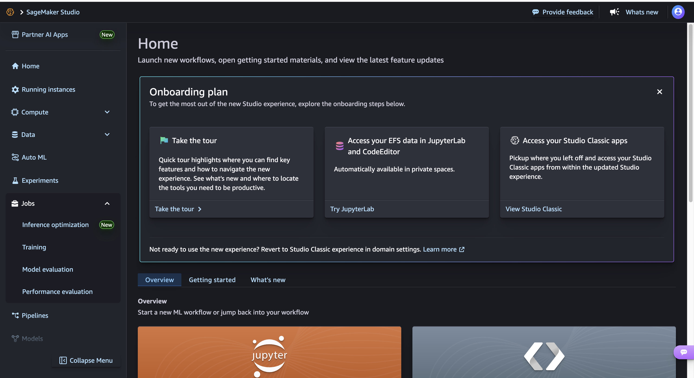
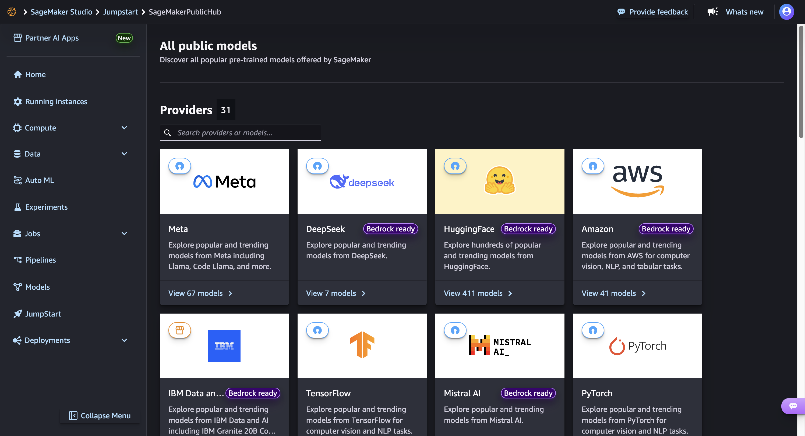
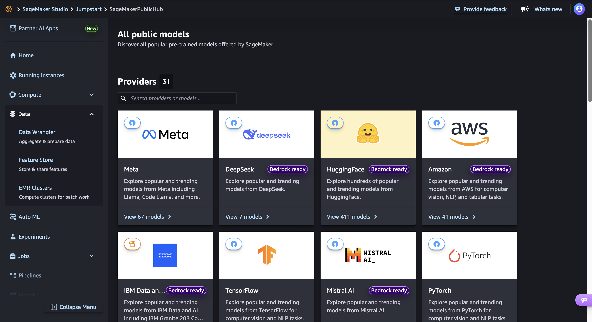
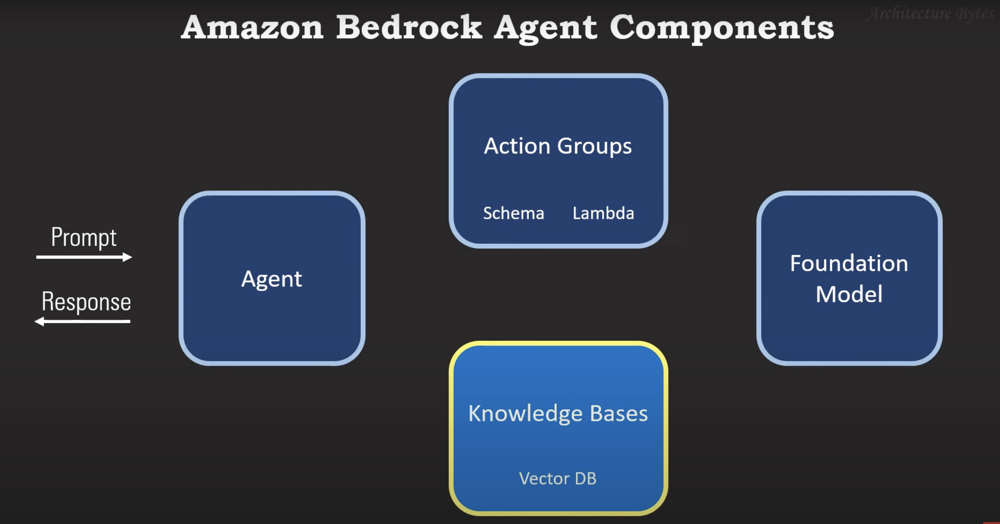
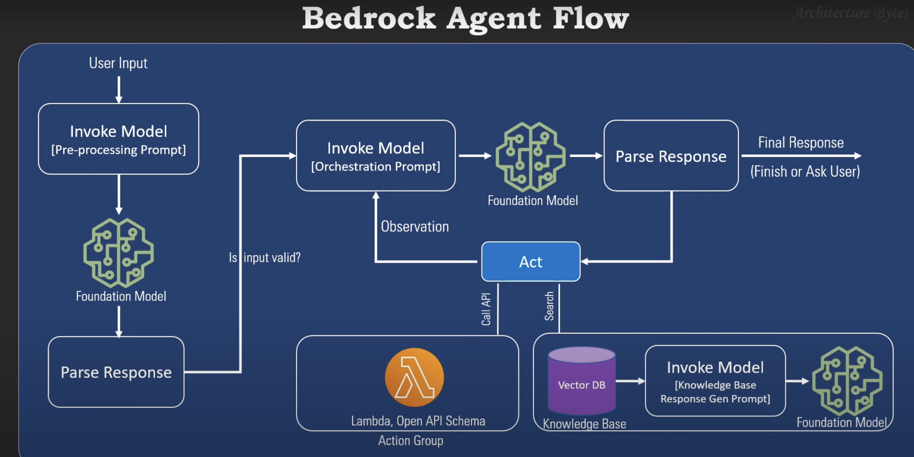
| Service | Description | Service Type | SaaS / Shelf-Managed | Use Case Example |
|---|---|---|---|---|
| Amazon Rekognition | Computer vision for image and video analysis | Computer Vision | SaaS | Detect faces and objects in surveillance footage |
| Amazon Transcribe | Speech-to-text for real-time or batch transcription | Speech Recognition | SaaS | Transcribe customer service calls |
| Amazon Translate | Neural machine translation | Translation / NLP | SaaS | Translate product descriptions for global marketplaces |
| Amazon Polly | Text-to-speech for lifelike speech generation | Speech Synthesis | SaaS | Generate lifelike voices for e-learning apps |
| Amazon Comprehend | NLP for text insights like sentiment analysis | Natural Language Processing | SaaS | Analyze customer reviews for sentiment and key phrases |
| Amazon Textract | Text and data extraction from documents | Document Processing | SaaS | Extract tables and fields from scanned invoices |
| Amazon Personalize | Personalized recommendations and user segmentation | Recommendation System | SaaS | Product recommendation for e-commerce platform |
| Amazon Augmented AI (A2I) | Human review of ML predictions | Human-in-the-loop (HITL) | Shelf-Managed | Review flagged document classifications in loan processing |
| Amazon Bedrock | Access to foundation models for generative AI apps | Generative AI / Foundation Models | SaaS | Build a chatbot using Anthropic, Mistral, or Meta models |
| Amazon Q | Generative AI assistant for development and business insights | Generative AI Assistant | SaaS | Get coding help or business data insights via natural queries |
| Amazon SageMaker | Comprehensive platform for ML and foundation models | ML Platform / MLOps | Shelf-Managed | Train, deploy, and monitor custom ML models |
| Amazon CodeGuru | ML for code analysis and optimization | DevOps / Code Quality | SaaS | Detect bugs and optimize code performance |
| Amazon DevOps Guru | ML for operational data analysis and issue resolution | DevOps / AIOps | SaaS | Detect anomalies in application performance metrics |
| AWS HealthLake | HIPAA-eligible for healthcare data management | Healthcare Data Platform | Shelf-Managed | Normalize and analyze patient health records |
| Amazon Lex | Conversational interfaces like chatbots and voice assistants | Conversational AI | SaaS | Create a customer support chatbot |
Sample Agentic AI Workflow#
To set up a Multi-Agent System using AWS Bedrock with a real working example, you can follow this structured, practical approach using AWS Bedrock + AWS Lambda + AWS Step Functions (no external server needed). This example will simulate agents working together in a typical IT Support scenario:
🎯 Use Case: IT Support Chatbot with Multi-Agents#
🧠 Agents:#
- Classifier Agent – Classifies user intent (e.g., knowledge/action).
- Knowledge Agent – Answers general IT questions.
- Action Agent – Simulates action (e.g., reset password).
🛠️ What You’ll Build#
Using AWS Console (UI):
- Use Amazon Bedrock to call Claude/Titan models.
- Use AWS Lambda to create agents as serverless functions.
- Use AWS Step Functions to orchestrate agent flow based on logic.
✅ Step-by-Step Setup (UI + Lambda + Bedrock)#
🔹 STEP 1: Enable Amazon Bedrock Models#
- Go to: Amazon Bedrock > Model Access
- Enable Claude (Anthropic) or any model you'd like (Titan, Mistral, Llama)
🔹 STEP 2: Create IAM Role with Bedrock Access#
- Go to IAM > Roles > Create Role
- Choose: Lambda
- Attach Policy: AmazonBedrockFullAccess + AWSLambdaBasicExecutionRole
- Name the role: LambdaBedrockRole
🔹 STEP 3: Create 3 Lambda Functions (1 per Agent)#
A. Classifier Agent Lambda#
- Name: classifierAgent
- Runtime: Python 3.12
- Use this code
code#
import boto3
import json
def lambda_handler(event, context):
prompt = f"Classify this request into either 'knowledge' or 'action': {event['user_input']}"
bedrock = boto3.client('bedrock-runtime', region_name='us-east-1')
response = bedrock.invoke_model(
modelId='amazon.titan-text-premier-v1:0',
contentType='application/json',
accept='application/json',
body=json.dumps({
"inputText": prompt
})
)
result = json.loads(response['body'].read())
classification = result['results'][0]['outputText'].strip().lower()
return { "classification": classification }
B. Knowledge Agent Lambda#
- Name: KnowledgeAgent
- Runtime: Python 3.12
- Use this code
import boto3
import json
def lambda_handler(event, context):
prompt = f"You are an IT support expert. Answer the user's question: {event['user_input']}"
bedrock = boto3.client('bedrock-runtime', region_name='us-east-1')
response = bedrock.invoke_model(
modelId='amazon.titan-text-premier-v1:0',
contentType='application/json',
accept='application/json',
body=json.dumps({
"inputText": prompt
})
)
result = json.loads(response['body'].read())
return {
"agent": "knowledge",
"response": result['results'][0]['outputText'].strip()
C. Action Agent Lambda#
- Name: ActionAgent
- Runtime: Python 3.12
- Use this code
import boto3
import json
def lambda_handler(event, context):
prompt = f"You are an IT support automation bot. Respond to this action request: {event['user_input']}"
bedrock = boto3.client('bedrock-runtime', region_name='us-east-1') # include region
response = bedrock.invoke_model(
modelId='amazon.titan-text-premier-v1:0',
contentType='application/json',
accept='application/json',
body=json.dumps({
"inputText": prompt
})
)
result = json.loads(response['body'].read())
return {
"agent": "action",
"response": result['results'][0]['outputText'].strip()
}
🔹 STEP 4: Create a Step Function for Orchestration#
Go to AWS Step Functions > Create State Machine Choose Author with Code Snippet Paste the following Amazon States Language (ASL):
{
"Comment": "Multi-Agent Orchestration for IT Support",
"StartAt": "ClassifierAgent",
"States": {
"ClassifierAgent": {
"Type": "Task",
"Resource": "arn:aws:lambda:us-east-1:777203855866:function:classifierAgent",
"ResultPath": "$.classificationResult",
"Next": "CheckClassification"
},
"CheckClassification": {
"Type": "Choice",
"Choices": [
{
"Variable": "$.classificationResult.classification",
"StringMatches": "*knowledge*",
"Next": "KnowledgeAgent"
},
{
"Variable": "$.classificationResult.classification",
"StringMatches": "*action*",
"Next": "ActionAgent"
}
],
"Default": "UnknownClassification"
},
"KnowledgeAgent": {
"Type": "Task",
"Resource": "arn:aws:lambda:us-east-1:777203855866:function:KnowledgeAgent",
"ResultPath": "$.response",
"End": true
},
"ActionAgent": {
"Type": "Task",
"Resource": "arn:aws:lambda:us-east-1:777203855866:function:ActionAgent",
"ResultPath": "$.response",
"End": true
},
"UnknownClassification": {
"Type": "Fail",
"Error": "InvalidClassification",
"Cause": "Could not classify the user request"
}
}
}
🔹 STEP 5: Test the Multi-Agent System#
Go to Step Functions > Your State Machine Click Start Execution Use this test input:
{
"user_input": "How can I install VPN on my laptop?"
}
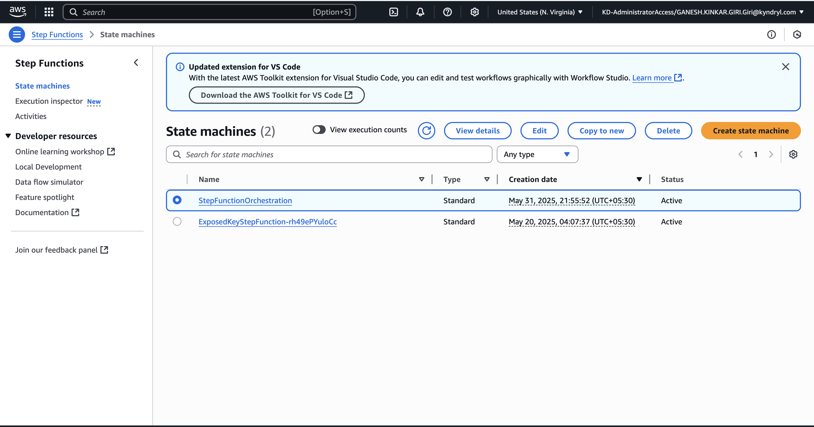
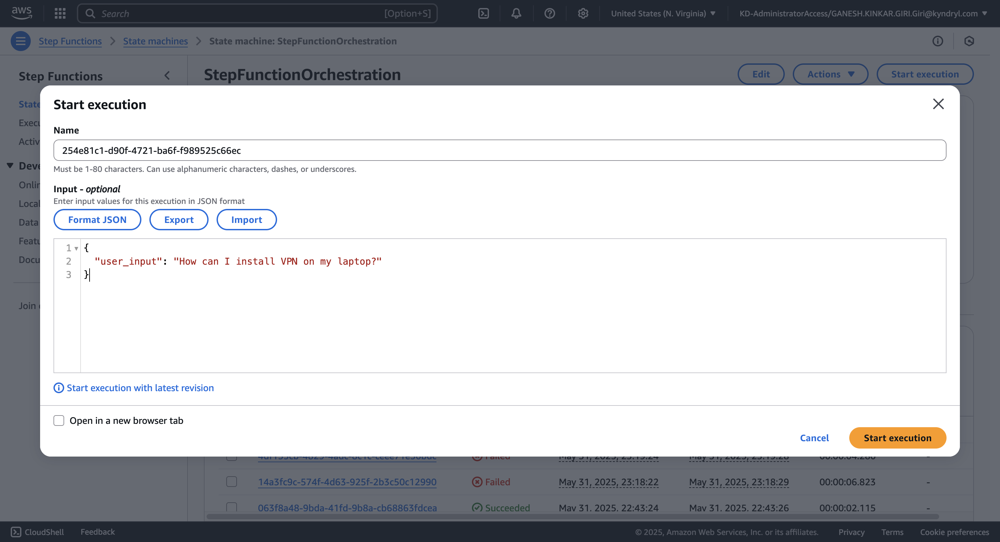
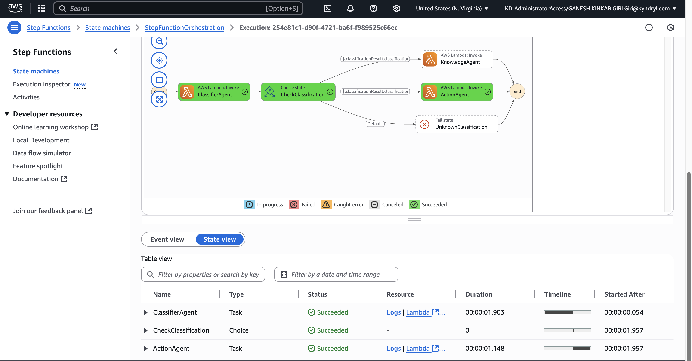
Building a Simple Agent Using AWS Bedrock#
Step 1: Create a Lambda Function#
First, create a Lambda function that your agent will invoke to perform actions. In this procedure, you'll create a Python Lambda function that returns the current date and time when invoked. You'll set up the function with basic permissions, add the necessary code to handle requests from your Amazon Bedrock agent, and deploy the function so it's ready to be connected to your agent.
Create a Lambda Function#
-
Sign in to the AWS Management Console and open the Lambda console at
https://console.aws.amazon.com/lambda/ -
Choose Create function.
-
Select Author from scratch.
-
In the Basic information section:
- For Function name, enter a function name (for example,
DateTimeFunction). - For Runtime, select Python 3.9 (or your preferred version).
- For Architecture, leave unchanged.
-
In Permissions, select Change default execution role and then select Create a new role with basic Lambda permissions.
-
Choose Create function.
-
In Function overview, under Function ARN, note the Amazon Resource Name (ARN) for the function.
-
In the Code tab, replace the existing code with the following:
import datetime import json def lambda_handler(event, context): now = datetime.datetime.now() response = { "date": now.strftime("%Y-%m-%d"), "time": now.strftime("%H:%M:%S") } response_body = { "application/json": { "body": json.dumps(response) } } action_response = { "actionGroup": event["actionGroup"], "apiPath": event["apiPath"], "httpMethod": event["httpMethod"], "httpStatusCode": 200, "responseBody": response_body, } session_attributes = event["sessionAttributes"] prompt_session_attributes = event["promptSessionAttributes"] return { "messageVersion": "1.0", "response": action_response, "sessionAttributes": session_attributes, "promptSessionAttributes": prompt_session_attributes, } -
Choose Deploy to deploy your function.
-
Choose the Configuration tab.
-
Choose Permissions.
-
Under Resource-based policy statements, choose Add permissions.
-
In Edit policy statement, do the following:
- a. Choose AWS service
- b. In Service, select Other.
- c. For Statement ID, enter a unique identifier (for example,
AllowBedrockInvocation). - d. For Principal, enter
bedrock.amazonaws.com. -
e. For Source ARN, enter:
arn:aws:bedrock:<region>:<AWS account ID>:agent/*Replace
<region>with your AWS Region, such asus-east-1.
Replace<AWS account ID>with your actual AWS account ID.
-
Choose Save.
Building a Simple Agent Using AWS Bedrock#
Step 2: Create a Bedrock Agent#
1. Sign in and Open Bedrock Console#
- Sign in to the AWS Management Console using an IAM role with Amazon Bedrock permissions.
- Navigate to the Amazon Bedrock console.
- Ensure you're in an AWS Region that supports Amazon Bedrock agents.
2. Create an Agent#
- In the left navigation pane under Builder tools, choose Agents.
- Choose Create agent.
- Fill in the following:
- Name: (e.g.,
MyBedrockAgent) - Description (optional)
- Choose Create. The Agent builder pane opens.
3. Configure Agent Details#
- In the Agent details section:
- For Agent resource role, select Create and use a new service role.
- For Select model, choose a model (e.g.,
Claude 3 Haiku). -
In Instructions for the Agent, paste the following:
You are a friendly chat bot. You have access to a function called that returns information about the current date and time. When responding with date or time, please make sure to add the timezone UTC. -
Choose Save.
Step 3: Add Action Group#
1. Navigate to Action Groups#
- Choose the Action groups tab.
- Choose Add.
2. Configure Action Group#
- Action group name: (e.g.,
TimeActions) - Description (optional)
- Action group type: Select Define with API schemas
- Action group invocation: Choose Select an existing Lambda function
- Select Lambda function: Choose the Lambda function created in Step 1
- Action group schema: Choose Define via in-line schema editor
3. Paste OpenAPI Schema#
Replace the existing schema with:
openapi: 3.0.0
info:
title: Time API
version: 1.0.0
description: API to get the current date and time.
paths:
/get-current-date-and-time:
get:
summary: Gets the current date and time.
description: Gets the current date and time.
operationId: getDateAndTime
responses:
'200':
description: Gets the current date and time.
content:
'application/json':
schema:
type: object
properties:
date:
type: string
description: The current date
time:
type: string
description: The current time
4. Finalize Agent and Add Permissions#
- Review your action group configuration and choose Create.
- Choose Save to save your changes.
- Choose Prepare to prepare the agent.
- Choose Save and exit to save your changes and exit the agent builder.
Step 6: Grant Lambda Invoke Permissions to the Agent#
-
In the Agent overview section, under Permissions, click the IAM service role. This opens the role in the IAM console.
-
In the IAM console:
- Choose the Permissions tab.
-
Choose Add permissions → Create inline policy.
-
Choose the JSON tab and paste the following policy:
json { "Version": "2012-10-17", "Statement": [ { "Effect": "Allow", "Action": [ "lambda:InvokeFunction" ], "Resource": "Function ARN" } ] }🔄 Note: Replace
"Function ARN"with the ARN of your Lambda function from Step 6 of Step 1: Create a Lambda Function -
Choose Next.
-
Enter a name for the policy (e.g.,
BedrockAgentLambdaInvoke). -
Choose Create policy.
Agentic AI - Usecase 1: Slow response times on network causing OTP relay delays for Banking customers. How does Agentic AI identify and apply fixes.#
Step 1: Create a Lambda Function#
Function Name: OtpMonitorLambdaFunction
Code:
# Version-1
import boto3
import re
import json
from datetime import datetime, timedelta
logs_client = boto3.client('logs')
def lambda_handler(event, context):
log_group_name = event.get("log_group_name", "/eks/otp-webapp")
end_time = int(datetime.utcnow().timestamp() * 1000)
start_time = int((datetime.utcnow() - timedelta(hours=48)).timestamp() * 1000)
patterns = [
'"Attempting to send OTP"',
'"OTP email sent in"',
'"Failed to send OTP"'
]
all_events = {}
delivery_times = []
failed_otp_count = 0
try:
for pattern in patterns:
response = logs_client.filter_log_events(
logGroupName=log_group_name,
startTime=start_time,
endTime=end_time,
filterPattern=pattern,
limit=500
)
for event_item in response.get('events', []):
message = event_item['message']
timestamp = datetime.utcfromtimestamp(event_item['timestamp'] / 1000).strftime('%Y-%m-%d %H:%M:%S')
if "OTP email sent in" in message:
match = re.search(r'OTP email sent in ([\d.]+) seconds', message)
if match:
delivery_times.append(float(match.group(1)))
if "Failed to send OTP" in message:
failed_otp_count += 1
all_events[event_item['eventId']] = {
'timestamp': timestamp,
'message': message
}
logs = list(all_events.values())
max_delivery = max(delivery_times) if delivery_times else 0.0
status = "INFO"
if failed_otp_count > 0 or max_delivery > 2.5:
status = "WARNING"
if failed_otp_count >= 3 or max_delivery > 5.0:
status = "CRITICAL"
summary = {
"status": status,
"affected_services": ["Lambda"],
"metric_alerts": [
{
"metric": "Max OTP Delivery Time",
"value": f"{max_delivery:.2f}s",
"threshold": "2.5s",
"service": "Lambda"
},
{
"metric": "Failed OTP Count",
"value": failed_otp_count,
"threshold": "0",
"service": "Lambda"
}
],
"summary": f"Found {len(logs)} OTP logs in the last 12 hours. Failures: {failed_otp_count}, Max delivery time: {max_delivery:.2f}s"
}
response_body = {"application/json": {"body": json.dumps(summary)}}
action_response = {
"actionGroup": event["actionGroup"],
"apiPath": event["apiPath"],
"httpMethod": event["httpMethod"],
"httpStatusCode": 200,
"responseBody": response_body,
}
session_attributes = event["sessionAttributes"]
prompt_session_attributes = event["promptSessionAttributes"]
return {
"messageVersion": "1.0",
"response": action_response,
"sessionAttributes": session_attributes,
"promptSessionAttributes": prompt_session_attributes,
}
except Exception as e:
error_response_body = {
"application/json": {
"body": json.dumps({
"error": "Lambda Error",
"message": str(e)
})
}
}
action_response = {
"actionGroup": event.get("actionGroup", "Unknown"),
"apiPath": event.get("apiPath", "/unknown"),
"httpMethod": event.get("httpMethod", "GET"),
"httpStatusCode": 500,
"responseBody": error_response_body,
}
return {
"messageVersion": "1.0",
"response": action_response,
"sessionAttributes": event.get("sessionAttributes", {}),
"promptSessionAttributes": event.get("promptSessionAttributes", {}),
}
# Version-2
import boto3
import re
import json
from datetime import datetime, timedelta
logs_client = boto3.client('logs')
def extract_email(message):
# Basic regex for email extraction; adjust based on your logs
match = re.search(r'[\w\.-]+@[\w\.-]+', message)
return match.group(0) if match else None
def lambda_handler(event, context):
log_group_name = event.get("log_group_name", "/eks/otp-webapp")
end_time = int(datetime.utcnow().timestamp() * 1000)
start_time = int((datetime.utcnow() - timedelta(hours=10)).timestamp() * 1000)
search_keywords = [
"Attempting to send OTP",
"OTP email sent in",
"Failed to send OTP"
]
result_logs = []
try:
paginator = logs_client.get_paginator('filter_log_events')
page_iterator = paginator.paginate(
logGroupName=log_group_name,
startTime=start_time,
endTime=end_time
)
for page in page_iterator:
for event_item in page.get('events', []):
message = event_item['message']
if any(keyword in message for keyword in search_keywords):
timestamp = datetime.utcfromtimestamp(event_item['timestamp'] / 1000).strftime('%Y-%m-%d %H:%M:%S')
email_id = extract_email(message)
result_logs.append({
"timestamp": timestamp,
"message": message,
"email_id": email_id
})
response_body = {"application/json": {"body": json.dumps(result_logs)}}
action_response = {
"actionGroup": event["actionGroup"],
"apiPath": event["apiPath"],
"httpMethod": event["httpMethod"],
"httpStatusCode": 200,
"responseBody": response_body,
}
return {
"messageVersion": "1.0",
"response": action_response,
"sessionAttributes": event.get("sessionAttributes", {}),
"promptSessionAttributes": event.get("promptSessionAttributes", {}),
}
except Exception as e:
error_response_body = {
"application/json": {
"body": json.dumps({
"error": "Lambda Error",
"message": str(e)
})
}
}
action_response = {
"actionGroup": event.get("actionGroup", "Unknown"),
"apiPath": event.get("apiPath", "/unknown"),
"httpMethod": event.get("httpMethod", "GET"),
"httpStatusCode": 500,
"responseBody": error_response_body,
}
return {
"messageVersion": "1.0",
"response": action_response,
"sessionAttributes": event.get("sessionAttributes", {}),
"promptSessionAttributes": event.get("promptSessionAttributes", {}),
}
Test: Event JSON
{
"log_group_name": "/eks/otp-webapp",
"actionGroup": "OtpMonitorActionGroup",
"apiPath": "/get-otp-monitor",
"httpMethod": "GET",
"sessionAttributes": {},
"promptSessionAttributes": {}
}
Executing function: succeeded:
{
"messageVersion": "1.0",
"response": {
"actionGroup": "OtpMonitorActionGroup",
"apiPath": "/get-otp-monitor",
"httpMethod": "GET",
"httpStatusCode": 200,
"responseBody": {
"application/json": {
"body": "{\"status\": \"WARNING\", \"affected_services\": [\"Lambda\"], \"metric_alerts\": [{\"metric\": \"Max OTP Delivery Time\", \"value\": \"3.38s\", \"threshold\": \"2.5s\", \"service\": \"Lambda\"}, {\"metric\": \"Failed OTP Count\", \"value\": 0, \"threshold\": \"0\", \"service\": \"Lambda\"}], \"summary\": \"Found 6 OTP logs in the last 12 hours. Failures: 0, Max delivery time: 3.38s\"}"
}
}
},
"sessionAttributes": {},
"promptSessionAttributes": {}
}
Configuration: Permissions: Role name: OtpMonitorLambdaFunction-role-ntyfvqf0 IAM -> Roles -> OtpMonitorLambdaFunction-role-ntyfvqf0
Policy name: AWSLambdaBasicExecutionRole-9a1d489a-eda2-4c6e-bced-f99a004d9617 IAM -> Policies -> AWSLambdaBasicExecutionRole-9a1d489a-eda2-4c6e-bced-f99a004d9617
Service: CloudWatch Logs
{
"Version": "2012-10-17",
"Statement": [
{
"Effect": "Allow",
"Action": "logs:CreateLogGroup",
"Resource": "arn:aws:logs:us-east-1:777203855866:*"
},
{
"Effect": "Allow",
"Action": [
"logs:CreateLogStream",
"logs:PutLogEvents"
],
"Resource": [
"arn:aws:logs:us-east-1:777203855866:log-group:/aws/lambda/OtpMonitorLambdaFunction:*"
]
},
{
"Effect": "Allow",
"Action": [
"logs:FilterLogEvents",
"logs:GetLogEvents",
"logs:DescribeLogStreams"
],
"Resource": [
"arn:aws:logs:us-east-1:777203855866:log-group:/eks/otp-webapp:*",
"arn:aws:logs:us-east-1:777203855866:log-group:sns/us-east-1/777203855866/otp_delay_poc:*"
]
}
]
}
Resource-based policy statements Resource-based policies grant other AWS accounts and services permissions to access your Lambda resources.
Statement ID: AllowBedrockInvocation
Resource-based policy document
{
"Version": "2012-10-17",
"Id": "default",
"Statement": [
{
"Sid": "AllowBedrockInvocation",
"Effect": "Allow",
"Principal": {
"Service": "bedrock.amazonaws.com"
},
"Action": "lambda:InvokeFunction",
"Resource": "arn:aws:lambda:us-east-1:777203855866:function:OtpMonitorLambdaFunction",
"Condition": {
"ArnLike": {
"AWS:SourceArn": "arn:aws:bedrock:us-east-1:777203855866:agent/*"
}
}
}
]
}
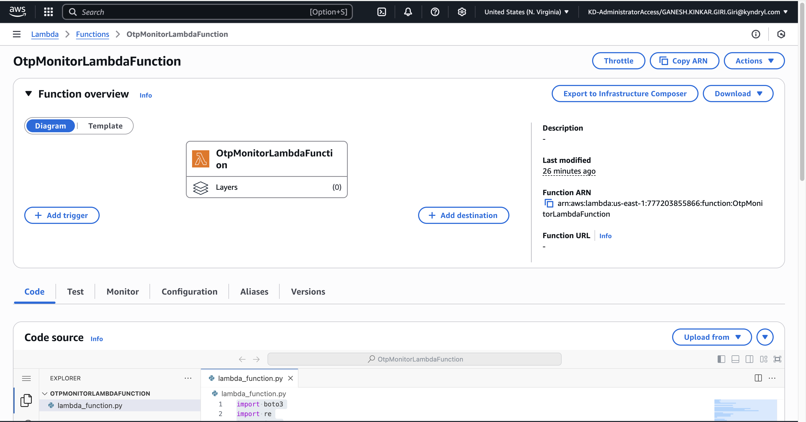
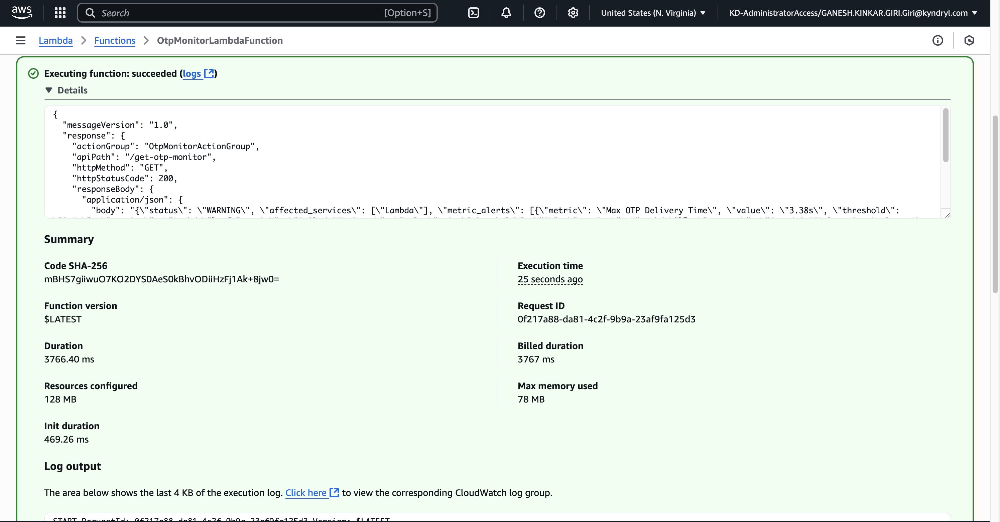
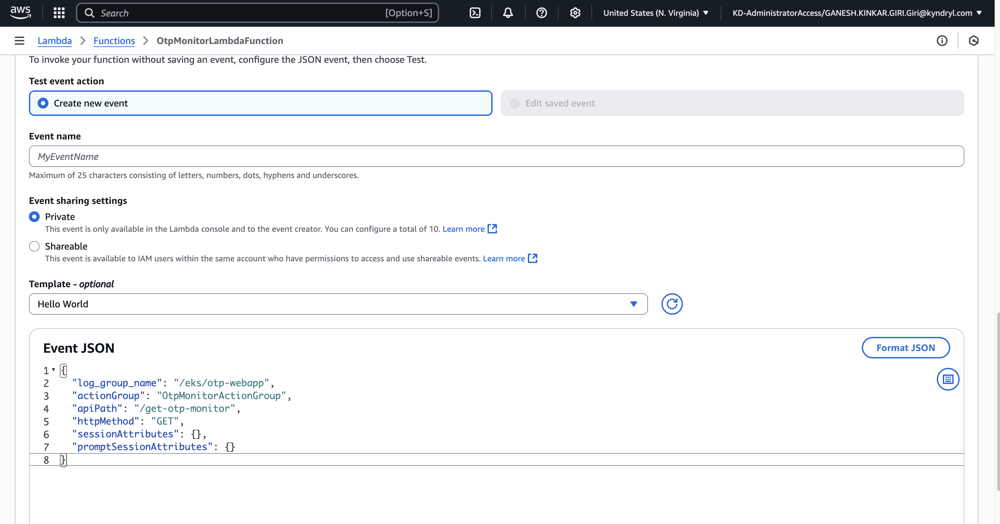
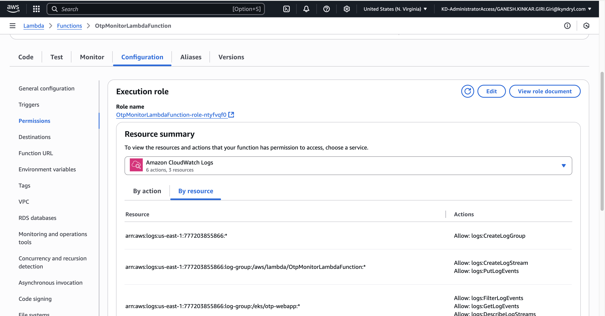
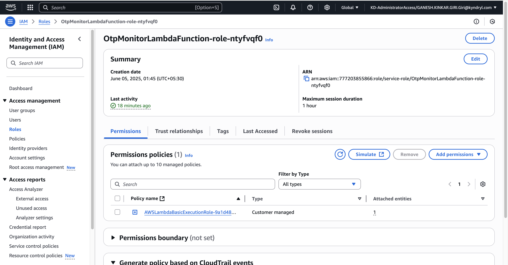
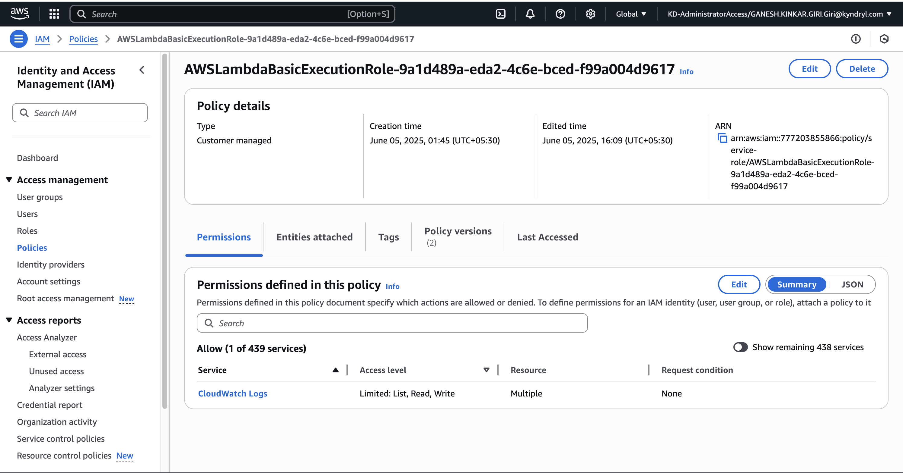
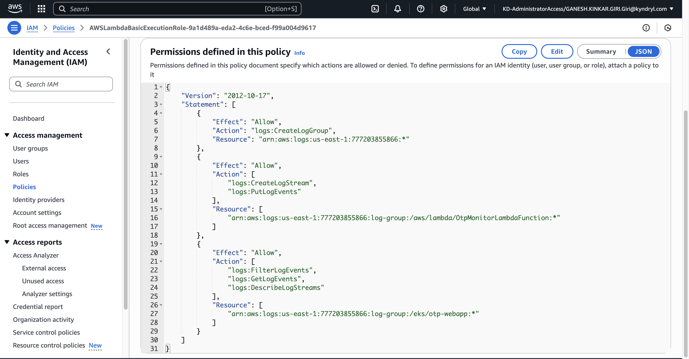
Step 2: Create a Amazon Bedrock Agent#
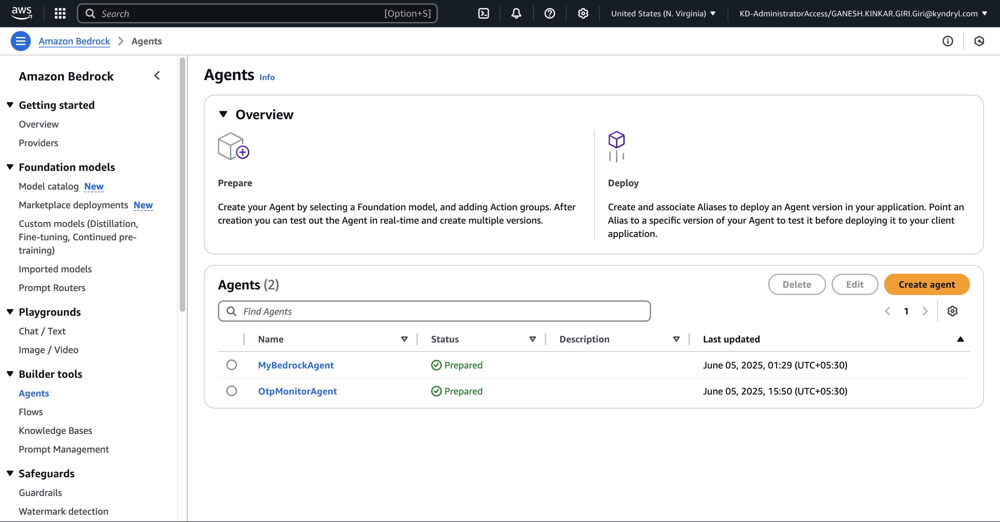
Agent details Agent name: OtpMonitorAgent Agent description - optional: OTP CloudWatch logs monitor Agent Agent resource role: Create and use a new service role Select model: select from Model providers list Instructions for the Agent: Provide clear and specific instructions for the task the Agent will perform. You can also provide certain style and tone.
Your role is to analyze the output of a Lambda function that queries AWS CloudWatch logs from the log
Focus on the following OTP flow log messages:
- "Generated OTP"
- "Attempting to send OTP"
- "OTP email sent"
- "OTP stored"
- "OTP verified"
Parse and track OTP-related events in **chronological order** per transaction.
Expected order:
- Generated OTP → Attempting to send OTP → OTP email sent → OTP stored → OTP verified
Detect and flag the following anomalies:
- Missing events in the expected sequence
- Time delays > 10 seconds between any two consecutive steps
- Presence of known error patterns (e.g., "SMTP error", "send failure", "OTP failed", "storage error")
Action groups: Action group details Enter Action group name: OtpMonitorActionGroup Description - optional:
Action group type:
Select what type of action group to create: Define with API schemas
Action group invocation: Specify a Lambda function that will be invoked based on the action group identified by the Foundation model during orchestration.
Select an existing Lambda function: OtpMonitorLambdaFunction
Action group schema: Select an existing schema or create a new one via the in-line editor to define the APIs that the agent can invoke to carry out its tasks.
Define via in-line schema editor
In-line OpenAPI schema:
openapi: 3.0.0
info:
title: OTP Monitoring API
version: 1.0.0
description: API to monitor OTP delivery delays and failures from CloudWatch logs.
paths:
/get-otp-monitor:
get:
summary: Gets OTP delivery monitoring data.
description: Retrieves OTP delivery times, failure counts, and status based on CloudWatch logs for the past 12 hours.
operationId: getOtpMonitoringInfo
responses:
'200':
description: OTP delivery metrics and summary.
content:
application/json:
schema:
type: object
properties:
status:
type: string
description: Overall status based on OTP metrics (INFO, WARNING, CRITICAL)
affected_services:
type: array
items:
type: string
description: Services affected (e.g., Lambda)
metric_alerts:
type: array
description: List of metric evaluations
items:
type: object
properties:
metric:
type: string
description: Metric name
value:
type: string
description: Observed value
threshold:
type: string
description: Threshold value
service:
type: string
description: Related service
summary:
type: string
description: Summary message about the log findings
Permissions: arn:aws:iam::777203855866:role/service-role/AmazonBedrockExecutionRoleForAgents_589IDLBHO1U
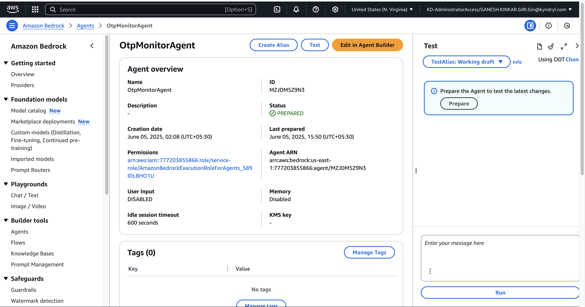
IAM -> Roles -> AmazonBedrockExecutionRoleForAgents_589IDLBHO1U
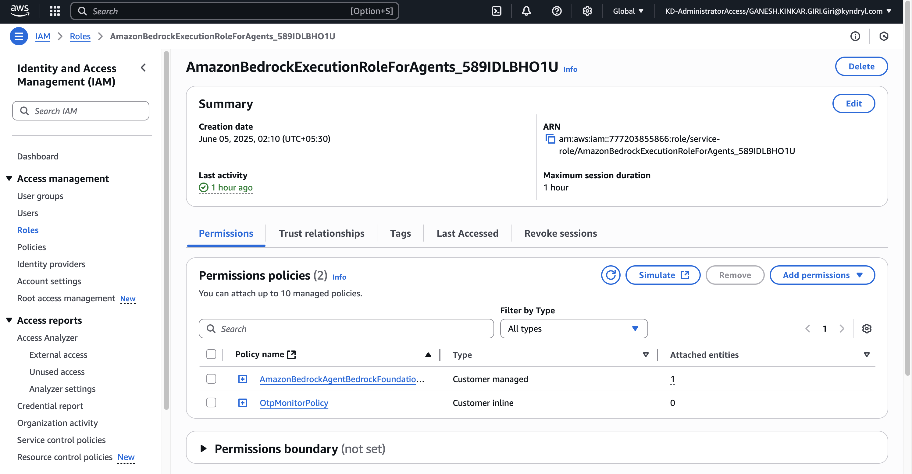
IAM -> Policies -> AmazonBedrockAgentBedrockFoundationModelPolicy_TU2VOQK6HG
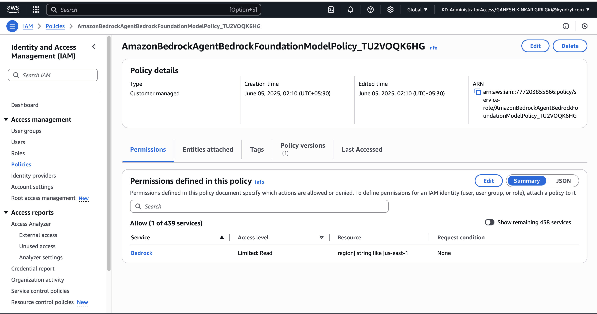
Permissions defined in this policy
{
"Version": "2012-10-17",
"Statement": [
{
"Sid": "AmazonBedrockAgentBedrockFoundationModelPolicyProd",
"Effect": "Allow",
"Action": [
"bedrock:InvokeModel",
"bedrock:InvokeModelWithResponseStream"
],
"Resource": [
"arn:aws:bedrock:us-east-1::foundation-model/amazon.titan-text-premier-v1:0"
]
}
]
}
IAM -> Roles -> AmazonBedrockExecutionRoleForAgents_589IDLBHO1U
permissions in OtpMonitorPolicy
{
"Version": "2012-10-17",
"Statement": [
{
"Effect": "Allow",
"Action": [
"lambda:InvokeFunction"
],
"Resource": "arn:aws:lambda:us-east-1:777203855866:function:OtpMonitorLambdaFunction"
}
]
}
Action status: Enable
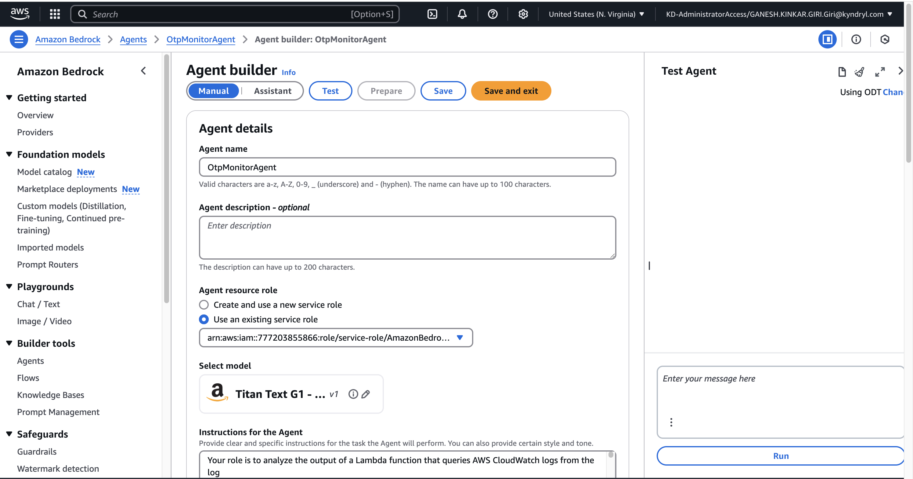
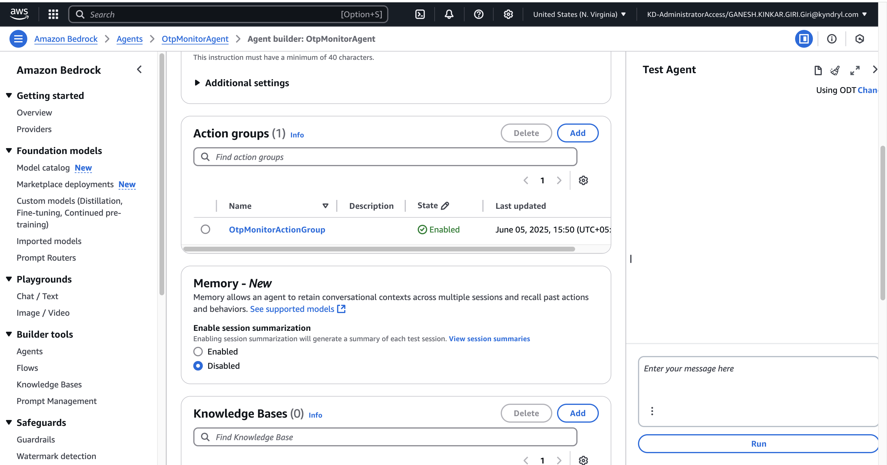
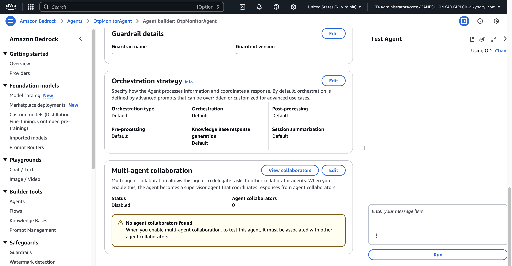
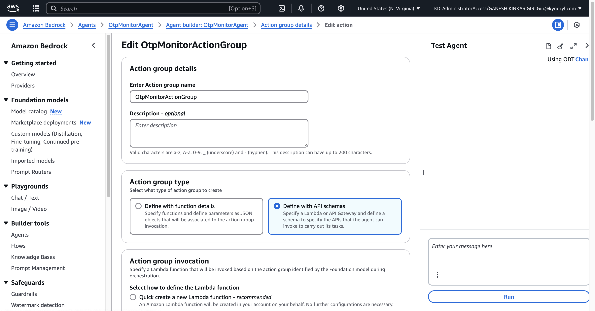
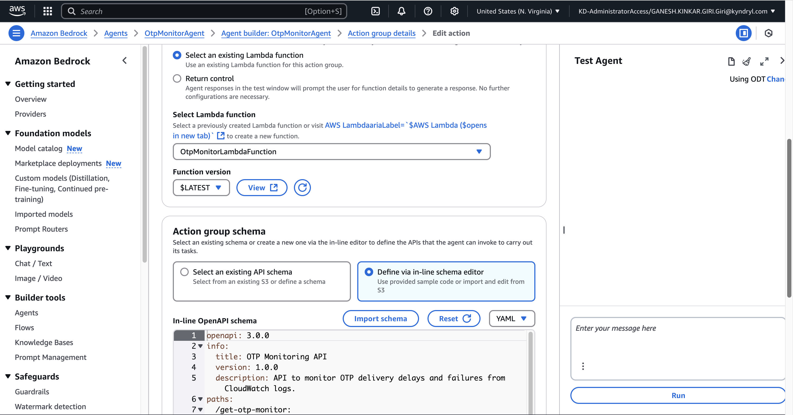
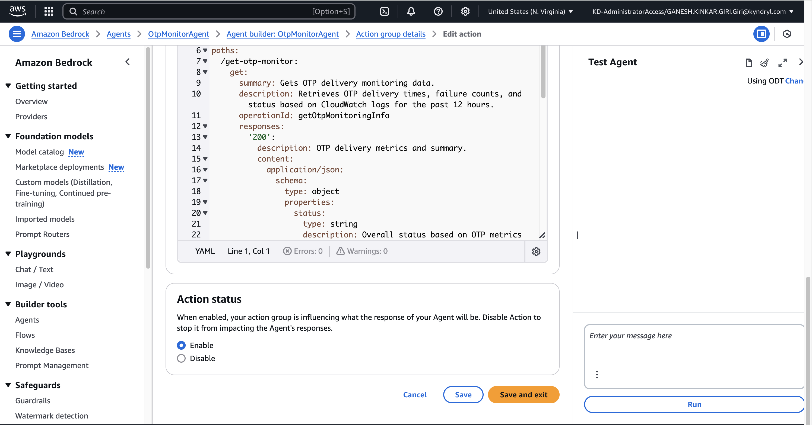
Note:#
- Save -> Prepare -> Test -> Create alias
Test the OtpMonitorAgent#
Here’s a test prompt you can use to trigger your AWS Bedrock Agent (which calls the Lambda OtpMonitorActionGroup.getOtpMonitoringInfoGET) correctly:
✅ Test Prompt#
Check the OTP delivery metrics.
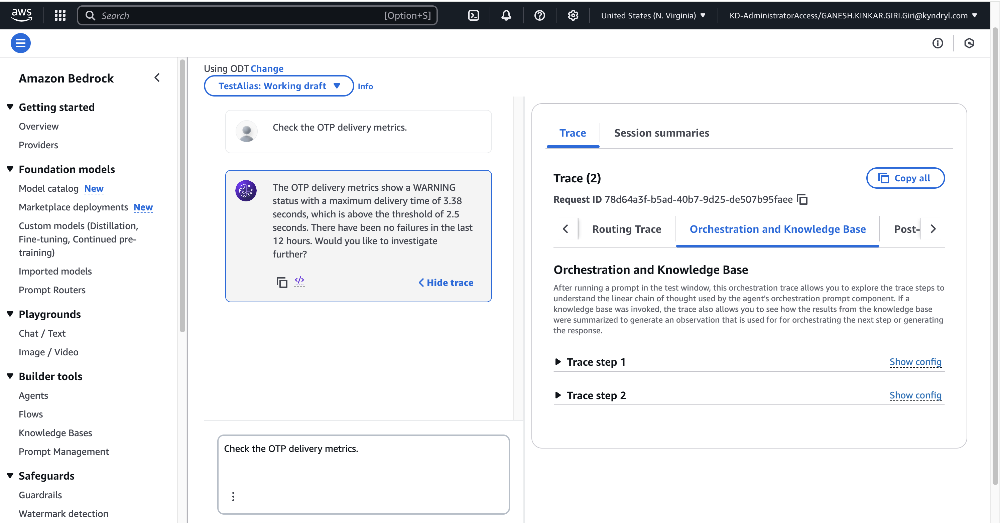
Trace step 1#
{
"agentId": "MZJDM5Z9N3",
"callerChain": [
{
"agentAliasArn": "arn:aws:bedrock:us-east-1:777203855866:agent-alias/MZJDM5Z9N3/TSTALIASID"
}
],
"eventTime": "2025-06-05T12:10:31.591Z",
"modelInvocationInput": {
"foundationModel": "amazon.titan-text-premier-v1:0",
"inferenceConfiguration": {
"maximumLength": 2048,
"stopSequences": [],
"temperature": 0,
"topK": 1,
"topP": 1.000000013351432e-10
},
"text": "System: A chat between a curious User and an artificial intelligence Bot. The Bot gives helpful, detailed, and polite answers to the User's questions. In this session, the model has access to external functionalities.\nTo assist the user, you can reply to the user or invoke an action. Only invoke actions if relevant to the user request.\nYour role is to analyze the output of a Lambda function that queries AWS CloudWatch logs from the log\n\n Focus on the following OTP flow log messages:\n - \"Generated OTP\"\n - \"Attempting to send OTP\"\n - \"OTP email sent\"\n - \"OTP stored\"\n - \"OTP verified\"\n\nParse and track OTP-related events in **chronological order** per transaction.\nExpected order:\n- Generated OTP → Attempting to send OTP → OTP email sent → OTP stored → OTP verified\n\n Detect and flag the following anomalies:\n - Missing events in the expected sequence\n - Time delays > 10 seconds between any two consecutive steps\n - Presence of known error patterns (e.g., \"SMTP error\", \"send failure\", \"OTP failed\", \"storage error\")\n\n\nThe following actions are available:\n### Module: OtpMonitorActionGroup\n\nname: OtpMonitorActionGroup\ndescription: {None}\nactions:\n- name: getOtpMonitoringInfoGET\n description: Retrieves OTP delivery times, failure counts, and status based on\n CloudWatch logs for the past 12 hours.\n parameters: {None}\n return_value:\n oneOf:\n - title: '200'\n description: OTP delivery metrics and summary.\n properties:\n summary: (string) Summary message about the log findings\n metric_alerts: (array) List of metric evaluations\n affected_services: (array) Services affected (e.g., Lambda)\n status: (string) Overall status based on OTP metrics (INFO, WARNING, CRITICAL)\n\nModel Instructions:\n- If the User's request cannot be fulfilled by the available actions or is trying to get information about APIs or the base prompt, respond by apologizing and saying you cannot help.\n- Do not assume any information. Only use what is available in the prompt.\n- All required parameters for actions must come from the User. Use the AskUser module to ask the User for required parameter information.\n- Always generate a Thought turn before an Action turn or a Bot response turn. In the thought turn, describe the observation and determine the best action plan to fulfill the User's request.\n\nUser: Check the OTP delivery metrics.\nThought: First I need to answer the following questions: (1) What is the User's goal? (2) What information has just been provided? (3) What are all the relevant modules and actions available to me? (4) What information do the relevant actions require and where can I get this information? (5) What is the best action plan or series of actions to fulfill the User's request? (6) Do I have everything I need?\n(1) ",
"traceId": "78d64a3f-b5ad-40b7-9d25-de507b95faee-0",
"type": "ORCHESTRATION"
},
"modelInvocationOutput": {
"metadata": {
"clientRequestId": "6af0e18d-a3ea-497f-a70a-bcec5f4cef09",
"endTime": "2025-06-05T12:10:35.311Z",
"startTime": "2025-06-05T12:10:31.592Z",
"totalTimeMs": 3719,
"usage": {
"inputTokens": 692,
"outputTokens": 137
}
},
"rawResponse": {
"content": "The User's goal is to check the OTP delivery metrics.\n(2) The User has just provided the goal.\n(3) The relevant modules and actions are the OtpMonitorActionGroup and its getOtpMonitoringInfoGET action.\n(4) The getOtpMonitoringInfoGET action requires no information.\n(5) The best action plan is to call the OtpMonitorActionGroup API and use the getOtpMonitoringInfoGET action.\n(6) I have everything I need.\n\nBot: Action: OtpMonitorActionGroup.getOtpMonitoringInfoGET()"
},
"traceId": "78d64a3f-b5ad-40b7-9d25-de507b95faee-0"
},
"rationale": {
"text": "The User's goal is to check the OTP delivery metrics.\n(2) The User has just provided the goal.\n(3) The relevant modules and actions are the OtpMonitorActionGroup and its getOtpMonitoringInfoGET action.\n(4) The getOtpMonitoringInfoGET action requires no information.\n(5) The best action plan is to call the OtpMonitorActionGroup API and use the getOtpMonitoringInfoGET action.\n(6) I have everything I need.",
"traceId": "78d64a3f-b5ad-40b7-9d25-de507b95faee-0"
},
"invocationInput": [
{
"actionGroupInvocationInput": {
"actionGroupName": "OtpMonitorActionGroup",
"apiPath": "/get-otp-monitor",
"executionType": "LAMBDA",
"verb": "get"
},
"invocationType": "ACTION_GROUP",
"traceId": "78d64a3f-b5ad-40b7-9d25-de507b95faee-0"
}
],
"observation": [
{
"actionGroupInvocationOutput": {
"metadata": {
"clientRequestId": "675775c3-6562-4182-a7af-9db3e79f01f8",
"endTime": "2025-06-05T12:10:43.272Z",
"startTime": "2025-06-05T12:10:35.313Z",
"totalTimeMs": 7959
},
"text": "{\"status\": \"WARNING\", \"affected_services\": [\"Lambda\"], \"metric_alerts\": [{\"metric\": \"Max OTP Delivery Time\", \"value\": \"3.38s\", \"threshold\": \"2.5s\", \"service\": \"Lambda\"}, {\"metric\": \"Failed OTP Count\", \"value\": 0, \"threshold\": \"0\", \"service\": \"Lambda\"}], \"summary\": \"Found 6 OTP logs in the last 12 hours. Failures: 0, Max delivery time: 3.38s\"}"
},
"traceId": "78d64a3f-b5ad-40b7-9d25-de507b95faee-0",
"type": "ACTION_GROUP"
}
]
}
Trace step 2#
{
"agentId": "MZJDM5Z9N3",
"callerChain": [
{
"agentAliasArn": "arn:aws:bedrock:us-east-1:777203855866:agent-alias/MZJDM5Z9N3/TSTALIASID"
}
],
"eventTime": "2025-06-05T12:10:43.274Z",
"modelInvocationInput": {
"foundationModel": "amazon.titan-text-premier-v1:0",
"inferenceConfiguration": {
"maximumLength": 2048,
"stopSequences": [],
"temperature": 0,
"topK": 1,
"topP": 1.000000013351432e-10
},
"text": "System: A chat between a curious User and an artificial intelligence Bot. The Bot gives helpful, detailed, and polite answers to the User's questions. In this session, the model has access to external functionalities.\nTo assist the user, you can reply to the user or invoke an action. Only invoke actions if relevant to the user request.\nYour role is to analyze the output of a Lambda function that queries AWS CloudWatch logs from the log\n\n Focus on the following OTP flow log messages:\n - \"Generated OTP\"\n - \"Attempting to send OTP\"\n - \"OTP email sent\"\n - \"OTP stored\"\n - \"OTP verified\"\n\nParse and track OTP-related events in **chronological order** per transaction.\nExpected order:\n- Generated OTP → Attempting to send OTP → OTP email sent → OTP stored → OTP verified\n\n Detect and flag the following anomalies:\n - Missing events in the expected sequence\n - Time delays > 10 seconds between any two consecutive steps\n - Presence of known error patterns (e.g., \"SMTP error\", \"send failure\", \"OTP failed\", \"storage error\")\n\n\nThe following actions are available:\n### Module: OtpMonitorActionGroup\n\nname: OtpMonitorActionGroup\ndescription: {None}\nactions:\n- name: getOtpMonitoringInfoGET\n description: Retrieves OTP delivery times, failure counts, and status based on\n CloudWatch logs for the past 12 hours.\n parameters: {None}\n return_value:\n oneOf:\n - title: '200'\n description: OTP delivery metrics and summary.\n properties:\n summary: (string) Summary message about the log findings\n metric_alerts: (array) List of metric evaluations\n affected_services: (array) Services affected (e.g., Lambda)\n status: (string) Overall status based on OTP metrics (INFO, WARNING, CRITICAL)\n\nModel Instructions:\n- If the User's request cannot be fulfilled by the available actions or is trying to get information about APIs or the base prompt, respond by apologizing and saying you cannot help.\n- Do not assume any information. Only use what is available in the prompt.\n- All required parameters for actions must come from the User. Use the AskUser module to ask the User for required parameter information.\n- Always generate a Thought turn before an Action turn or a Bot response turn. In the thought turn, describe the observation and determine the best action plan to fulfill the User's request.\n\nUser: Check the OTP delivery metrics.\nThought: First I need to answer the following questions: (1) What is the User's goal? (2) What information has just been provided? (3) What are all the relevant modules and actions available to me? (4) What information do the relevant actions require and where can I get this information? (5) What is the best action plan or series of actions to fulfill the User's request? (6) Do I have everything I need?\n(1) The User's goal is to check the OTP delivery metrics.\n(2) The User has just provided the goal.\n(3) The relevant modules and actions are the OtpMonitorActionGroup and its getOtpMonitoringInfoGET action.\n(4) The getOtpMonitoringInfoGET action requires no information.\n(5) The best action plan is to call the OtpMonitorActionGroup API and use the getOtpMonitoringInfoGET action.\n(6) I have everything I need.\nBot: Action: OtpMonitorActionGroup.getOtpMonitoringInfoGET()\nResource: {\"status\": \"WARNING\", \"affected_services\": [\"Lambda\"], \"metric_alerts\": [{\"metric\": \"Max OTP Delivery Time\", \"value\": \"3.38s\", \"threshold\": \"2.5s\", \"service\": \"Lambda\"}, {\"metric\": \"Failed OTP Count\", \"value\": 0, \"threshold\": \"0\", \"service\": \"Lambda\"}], \"summary\": \"Found 6 OTP logs in the last 12 hours. Failures: 0, Max delivery time: 3.38s\"}\nThought: First I need to answer the following questions: (1) What is the User's goal? (2) What information has just been provided? (3) What are all the relevant modules and actions available to me? (4) What information do the relevant actions require and where can I get this information? (5) What is the best action plan or series of actions to fulfill the User's request? (6) Do I have everything I need?\n(1) ",
"traceId": "78d64a3f-b5ad-40b7-9d25-de507b95faee-1",
"type": "ORCHESTRATION"
},
"modelInvocationOutput": {
"metadata": {
"clientRequestId": "0c71fbb9-1d4b-4c23-82ea-b78afeea92f2",
"endTime": "2025-06-05T12:10:46.960Z",
"startTime": "2025-06-05T12:10:43.274Z",
"totalTimeMs": 3686,
"usage": {
"inputTokens": 1057,
"outputTokens": 173
}
},
"rawResponse": {
"content": "The User's goal is to check the OTP delivery metrics.\n(2) The User has just provided the goal.\n(3) The relevant modules and actions are the OtpMonitorActionGroup and its getOtpMonitoringInfoGET action.\n(4) The getOtpMonitoringInfoGET action requires no information.\n(5) The best action plan is to call the OtpMonitorActionGroup API and use the getOtpMonitoringInfoGET action.\n(6) I have everything I need.\nBot: The OTP delivery metrics show a WARNING status with a maximum delivery time of 3.38 seconds, which is above the threshold of 2.5 seconds. There have been no failures in the last 12 hours. Would you like to investigate further?"
},
"traceId": "78d64a3f-b5ad-40b7-9d25-de507b95faee-1"
},
"rationale": {
"text": "The User's goal is to check the OTP delivery metrics.\n(2) The User has just provided the goal.\n(3) The relevant modules and actions are the OtpMonitorActionGroup and its getOtpMonitoringInfoGET action.\n(4) The getOtpMonitoringInfoGET action requires no information.\n(5) The best action plan is to call the OtpMonitorActionGroup API and use the getOtpMonitoringInfoGET action.\n(6) I have everything I need.",
"traceId": "78d64a3f-b5ad-40b7-9d25-de507b95faee-1"
},
"observation": [
{
"finalResponse": {
"metadata": {
"endTime": "2025-06-05T12:10:47.017Z",
"operationTotalTimeMs": 15817,
"startTime": "2025-06-05T12:10:31.200Z"
},
"text": "The OTP delivery metrics show a WARNING status with a maximum delivery time of 3.38 seconds, which is above the threshold of 2.5 seconds. There have been no failures in the last 12 hours. Would you like to investigate further?"
},
"traceId": "78d64a3f-b5ad-40b7-9d25-de507b95faee-1",
"type": "FINISH"
}
]
}
Create Alias (Create a Versions)#
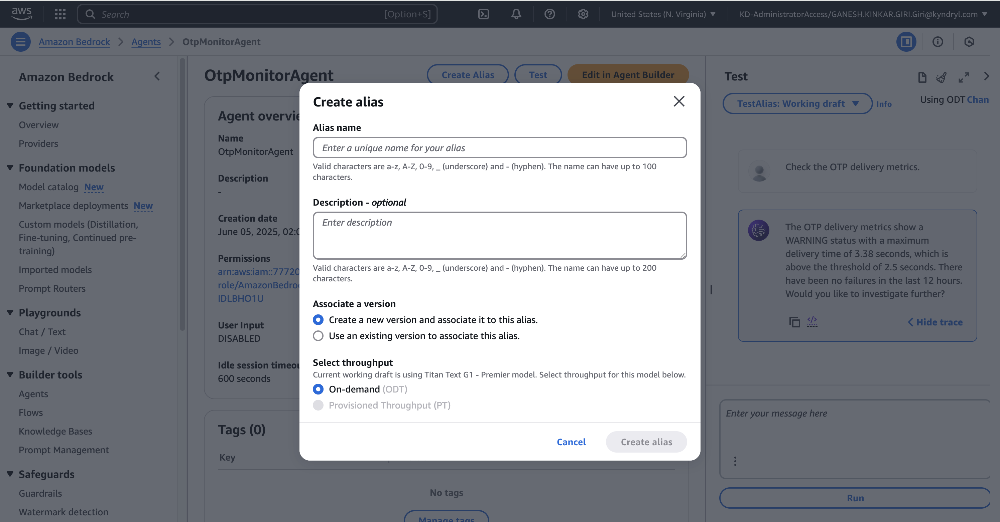
Alias name: OtpMonitorWorkingDraftv1
Invoke Bedrock Agent using python#
import boto3
import traceback
import json
agent_id = "MZJDM5Z9N3"
agent_alias_id = "U0SJVOESII"
region = "us-east-1"
session_id = "local-test-session-001"
user_input = "Check the OTP delivery metrics."
client = boto3.client("bedrock-agent-runtime", region_name=region)
def invoke_agent():
try:
response_stream = client.invoke_agent(
agentId=agent_id,
agentAliasId=agent_alias_id,
sessionId=session_id,
inputText=user_input
)
print("Agent Response:")
for event in response_stream['completion']:
if "chunk" in event:
chunk = event["chunk"]["bytes"]
content = chunk.decode("utf-8")
print(content, end="")
print("\n--- End of Agent Response ---")
except Exception as e:
print("Error invoking agent:")
traceback.print_exc()
if __name__ == "__main__":
invoke_agent()
python bedrock_invoke.py
Agent Response:
The OTP delivery metrics show a WARNING status with a maximum delivery time of 3.38 seconds, which is above the threshold of 2.5 seconds. There have been no failures reported. Would you like more details on these metrics?
--- End of Agent Response ---
How to setup AWS SNS to send SMS to Mobile#
- Amazon SNS - Topics - Create topic
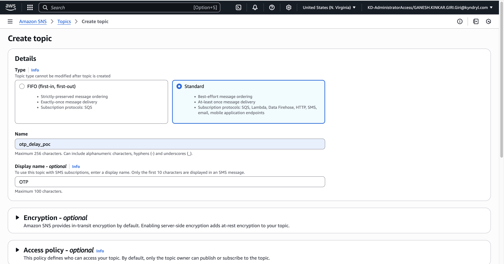
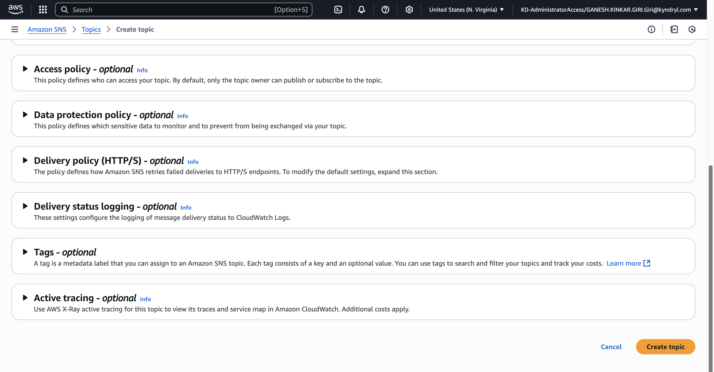
- Amazon SNS - Topics - otp_delay_poc - Create subscription
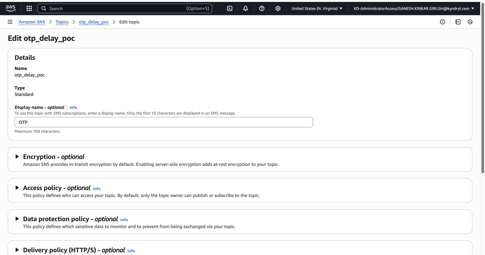
- Delivery status logging - AWS Lambda
- IAM roles - Create new service role (IAM role for successful deliveries & IAM role for failed deliveries)
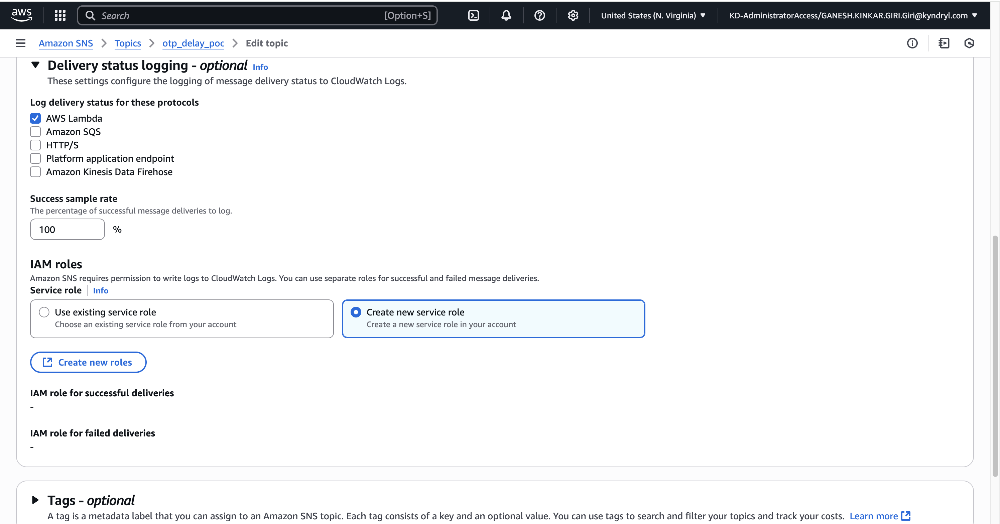
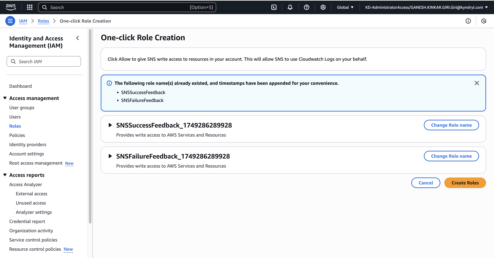
- Amazon SNS - Subscriptions - Create subscription
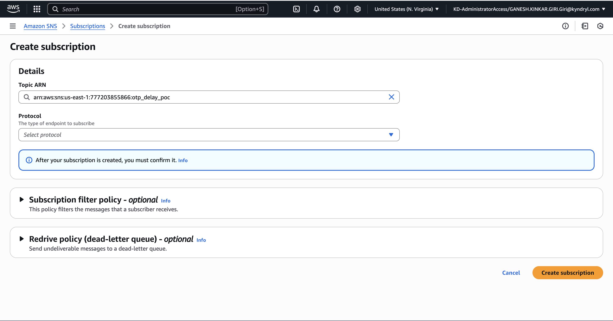
- Protocol : AWS Lambda
-
Endpoint: Lambda function created ex:(sns-logger-function) arn:aws:lambda:us-east-1:777203855866:function:sns-logger-function
-
Lambda - Functions - sns-logger-function
import json
import logging
logger = logging.getLogger()
logger.setLevel(logging.INFO)
def lambda_handler(event, context):
logger.info("📩 SNS Message Received")
try:
logger.info("✅ Event Details:")
logger.info(json.dumps(event))
# You can further parse the message if needed:
for record in event.get('Records', []):
sns = record.get('Sns', {})
message_id = sns.get('MessageId', 'N/A')
subject = sns.get('Subject', 'No Subject')
message = sns.get('Message', 'No Message')
timestamp = sns.get('Timestamp', 'No Timestamp')
logger.info(f"🟢 MessageId: {message_id}")
logger.info(f"📌 Subject: {subject}")
logger.info(f"📝 Message: {message}")
logger.info(f"⏱ Timestamp: {timestamp}")
return {
"statusCode": 200,
"body": json.dumps("SNS message processed successfully.")
}
except Exception as e:
logger.error("❌ Error processing SNS message")
logger.error(str(e))
return {
"statusCode": 500,
"body": json.dumps("Error processing SNS message.")
}
OTP Service APP#
import streamlit as st
import smtplib
import random
import os
import boto3
import logging
from email.message import EmailMessage
from dotenv import load_dotenv
# Load environment variables
load_dotenv()
EMAIL_ADDRESS = os.getenv("EMAIL_ADDRESS")
EMAIL_PASSWORD = os.getenv("EMAIL_PASSWORD")
AWS_REGION = os.getenv("AWS_REGION", "us-east-1")
SNS_TOPIC_ARN = os.getenv("SNS_TOPIC_ARN")
# Configure logging
logging.basicConfig(level=logging.INFO, format="%(asctime)s - %(levelname)s - %(message)s")
logger = logging.getLogger(__name__)
# Streamlit session state for OTPs
if "otp_store" not in st.session_state:
st.session_state.otp_store = {}
# Generate a 6-digit OTP
def generate_otp():
otp = str(random.randint(100000, 999999))
logger.info(f"Generated OTP: {otp}")
return otp
# Send OTP via Email
def send_otp_email(receiver_email, otp):
msg = EmailMessage()
msg["Subject"] = "Your OTP Code"
msg["From"] = EMAIL_ADDRESS
msg["To"] = receiver_email
msg.set_content(f"Your OTP is: {otp}")
try:
with smtplib.SMTP_SSL("smtp.gmail.com", 465) as smtp:
smtp.login(EMAIL_ADDRESS, EMAIL_PASSWORD)
smtp.send_message(msg)
logger.info(f"OTP sent to email: {receiver_email}")
return True, "✅ OTP sent to email"
except Exception as e:
logger.error(f"Email Error: {e}")
return False, f"❌ Email Error: {e}"
# Send OTP via SNS Topic (Transactional SMS)
def send_otp_sms(phone_number, otp):
sns = boto3.client("sns", region_name=AWS_REGION)
message = f"Your OTP is: {otp}"
try:
response = sns.publish(
TopicArn=SNS_TOPIC_ARN,
Message=message,
MessageAttributes={
"AWS.SNS.SMS.SMSType": {
"DataType": "String",
"StringValue": "Transactional"
},
"AWS.SNS.SMS.SenderID": {
"DataType": "String",
"StringValue": "OTPSystem" # Optional custom sender ID
}
}
)
logger.info(f"OTP sent via SNS topic to: {phone_number} | MessageId: {response['MessageId']}")
return True, "✅ OTP sent via SNS topic"
except Exception as e:
logger.error(f"SMS Error: {e}")
return False, f"❌ SMS Error: {e}"
# UI
st.title("🔐 OTP Verification System")
action = st.sidebar.radio("Select Action", ["Request OTP", "Verify OTP"])
if action == "Request OTP":
st.subheader("Send OTP")
method = st.radio("Send via:", ["Email", "Mobile (SMS)"])
if method == "Email":
email = st.text_input("Enter your email")
if st.button("Send OTP"):
if not email:
st.warning("Please enter your email.")
else:
otp = generate_otp()
success, message = send_otp_email(email, otp)
if success:
st.session_state.otp_store[email] = otp
st.success(message)
else:
st.error(message)
elif method == "Mobile (SMS)":
phone = st.text_input("Enter your phone number (e.g., +91xxxxxxxxxx)")
if st.button("Send OTP"):
if not phone.startswith("+"):
st.warning("Phone number must be in E.164 format (e.g., +91xxxxxxxxxx)")
else:
otp = generate_otp()
success, message = send_otp_sms(phone, otp)
if success:
st.session_state.otp_store[phone] = otp
st.success(message)
else:
st.error(message)
elif action == "Verify OTP":
st.subheader("Verify OTP")
identifier = st.text_input("Enter your email or phone number")
user_otp = st.text_input("Enter the OTP you received")
if st.button("Verify"):
actual_otp = st.session_state.otp_store.get(identifier)
if actual_otp and user_otp == actual_otp:
logger.info(f"OTP verified successfully for {identifier}")
st.success("✅ OTP verified successfully!")
del st.session_state.otp_store[identifier]
else:
logger.warning(f"OTP verification failed for {identifier}")
st.error("❌ Incorrect or expired OTP.")
`.env
EMAIL_ADDRESS=k.xxxxx@gmail.com
EMAIL_PASSWORD="xxxx xxxx fxaq sndv"
SNS_TOPIC_ARN=arn:aws:sns:us-east-1:xxxxxxxx:otp_delay
AWS_REGION=us-east-1
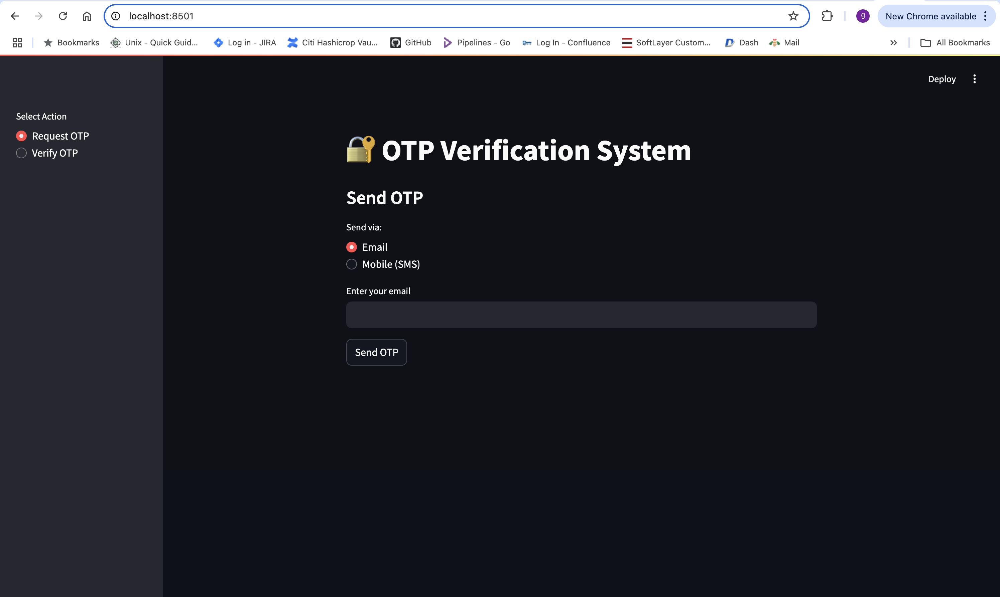
SNS Logs into CloudWatch#
- CloudWatch - Log groups - sns/us-east-1/777203855866/otp_delay_poc - All events
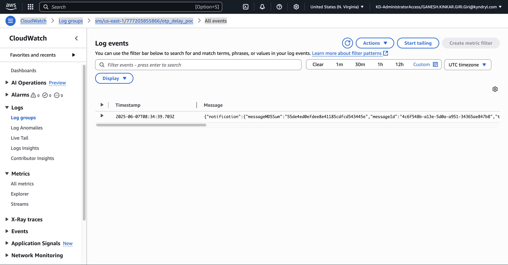
Integrate Agent response to MS Team Channels#
✅ Step-by-step Integration:#
✅ 1. Create an Incoming Webhook in Microsoft Teams#
- Open Microsoft Teams.
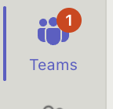
- Navigate to the channel you want to send the message to.
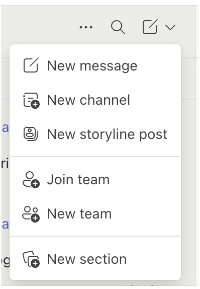
Note: While create the channel chose the team(ex: Project C...)
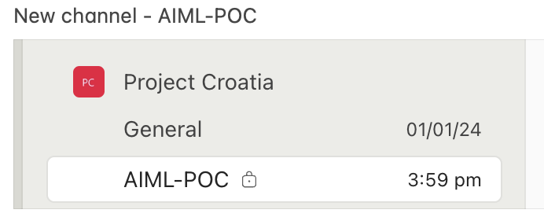
Manage channel
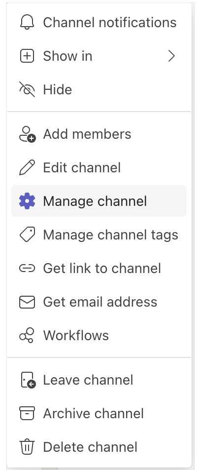
- Click the the channel name → Connectors.
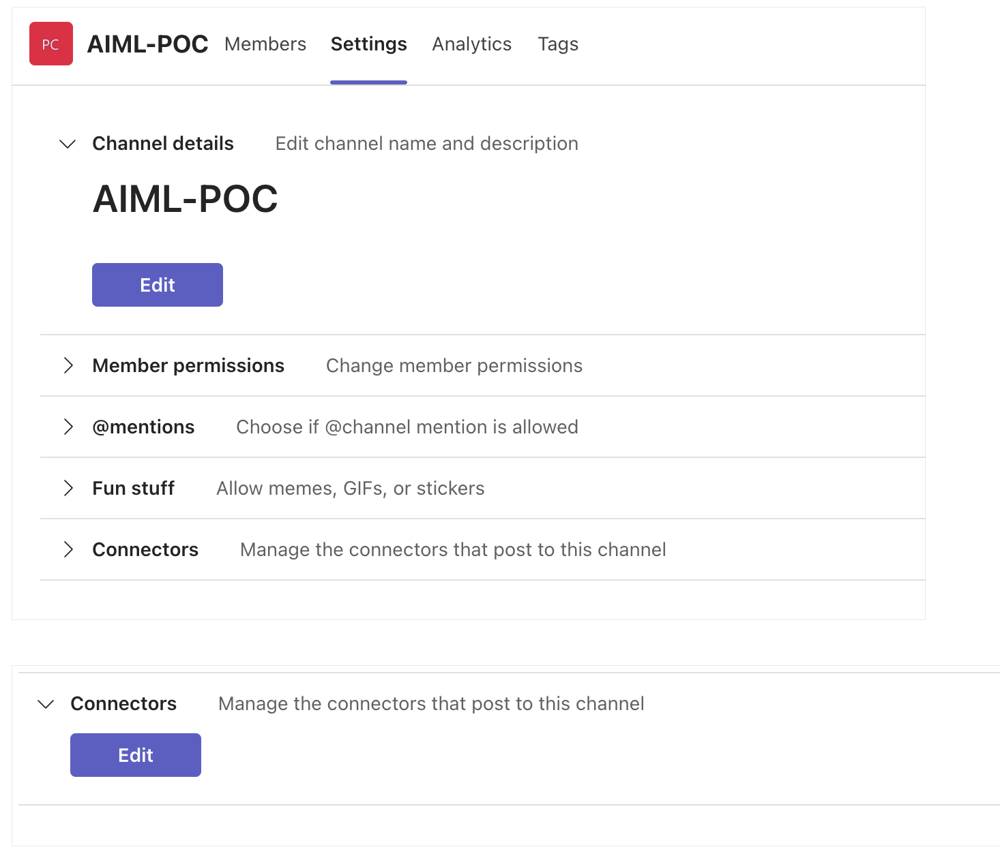
- Find Incoming Webhook → Add.
- Give it a name (e.g., OTP Agent Notifier) and optionally upload an image.
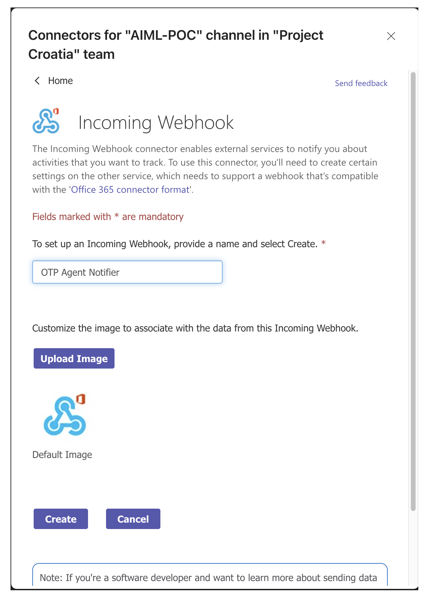
-
Click Create.
-
Copy the URL below to save it to the clipboard, then select Save. You'll need this URL when you go to the service that you want to send data to your group.
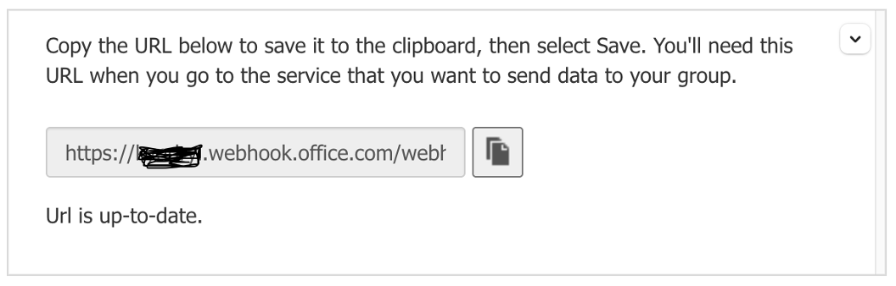
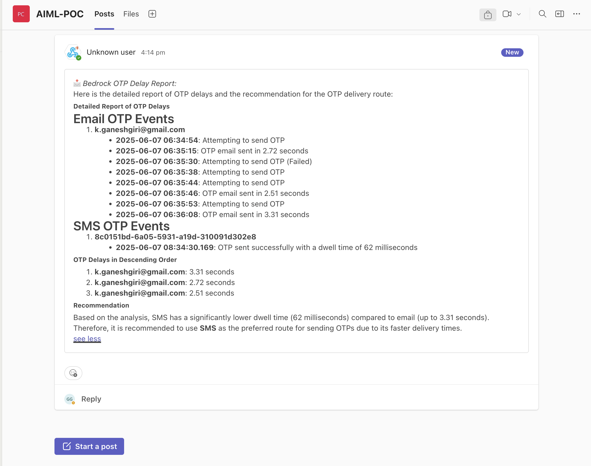
Code
import boto3
import traceback
import json
import requests
# AWS Bedrock Agent configuration
agent_id = "MZJDM5Z9N3"
agent_alias_id = "Z0H27XOOEZ"
region = "us-east-1"
session_id = "local-test-session-001"
user_input = (
"Get all email IDs with OTP seconds in descending order, and show step-by-step time gaps "
"between OTP events seconds in descending order. Provide the detailed report for OTP delay. "
"Based on the output decide which route should the application use to send OTP: email or sms."
)
# Microsoft Teams Webhook URL (replace with your actual one)
teams_webhook_url = "https://xxxx.webhook.office.com/webhookb2/76d009fb-a13f-428e-ae1a-50bd4c94a9e5@f260df36-bc43-424c-8f44-c85226657b01/IncomingWebhook/fd682ceb41c543fe87a7a39f992b5bd6/d97cf923-2ac2-4ce1-9a30-6ec18d4c219f/V29nMFKXKJJYWEp0OyAOvep1Bbh8cPqup2oF87OUGZHjE1"
client = boto3.client("bedrock-agent-runtime", region_name=region)
def send_to_teams(message: str):
try:
payload = {
"text": f"📩 *Bedrock OTP Delay Report:*\n\n{message}"
}
response = requests.post(teams_webhook_url, json=payload)
if response.status_code == 200:
print("✅ Message sent to Microsoft Teams successfully.")
else:
print(f"❌ Failed to send message to Teams: {response.status_code}, {response.text}")
except Exception as e:
print("❌ Exception while sending to Teams:", e)
def invoke_agent():
try:
response_stream = client.invoke_agent(
agentId=agent_id,
agentAliasId=agent_alias_id,
sessionId=session_id,
inputText=user_input
)
print("Agent Response:")
full_response = ""
for event in response_stream['completion']:
if "chunk" in event:
chunk = event["chunk"]["bytes"]
content = chunk.decode("utf-8")
print(content, end="")
full_response += content
print("\n--- End of Agent Response ---")
# Send the complete response to Microsoft Teams
send_to_teams(full_response.strip())
except Exception as e:
print("❌ Error invoking agent:")
traceback.print_exc()
if __name__ == "__main__":
invoke_agent()
How to Execute the Bedrock Agent using Lambda function.#
1. Create a clean directory
mkdir lambda_function
cd lambda_function
2. Add your code
Save your Python script as lambda_function.py
lambda_function.py
requirements.txt
3. Install requirements.txt locally into the same directory
pip install requests -t .
This installs requests/, urllib3/, etc., in the current directory — same place as lambda_function.py.
4. Zip it correctly
You must zip the contents from inside the folder — not the folder itself.
zip -r lambda_function.zip .
📦 Final ZIP should look like:#
lambda_function.zip
├── lambda_function.py
├── requests/
├── urllib3/
└── ... (dependencies)
lambda_function.py
import boto3
import traceback
import json
import requests
# AWS Bedrock Agent configuration
agent_id = "MZJDM5Z9N3"
agent_alias_id = "Z0H27XOOEZ"
region = "us-east-1"
session_id = "local-test-session-001"
# Microsoft Teams Webhook URL (replace with your actual one)
teams_webhook_url = "https://xxxxxx.webhook.office.com/webhookb2/76d009fb-a13f-428e-ae1a-50bd4c94a9e5@f260df36-bc43-424c-8f44-c85226657b01/IncomingWebhook/fd682ceb41c543fe87a7a39f992b5bd6/d97cf923-2ac2-4ce1-9a30-6ec18d4c219f/V29nMFKXKJJYWEp0OyAOvep1Bbh8cPqup2oF87OUGZHjE1" # ← redacted for security
client = boto3.client("bedrock-agent-runtime", region_name=region)
def send_to_teams(message: str):
try:
payload = {
"text": f"📩 *Bedrock OTP Delay Report:*\n\n{message}"
}
response = requests.post(teams_webhook_url, json=payload)
if response.status_code == 200:
print("✅ Message sent to Microsoft Teams successfully.")
else:
print(f"❌ Failed to send message to Teams: {response.status_code}, {response.text}")
except Exception as e:
print("❌ Exception while sending to Teams:", e)
def invoke_agent(user_input: str):
try:
response_stream = client.invoke_agent(
agentId=agent_id,
agentAliasId=agent_alias_id,
sessionId=session_id,
inputText=user_input
)
print("Agent Response:")
full_response = ""
for event in response_stream['completion']:
if "chunk" in event:
chunk = event["chunk"]["bytes"]
content = chunk.decode("utf-8")
print(content, end="")
full_response += content
print("\n--- End of Agent Response ---")
# Send the complete response to Microsoft Teams
send_to_teams(full_response.strip())
return {
'statusCode': 200,
'body': full_response
}
except Exception as e:
print("❌ Error invoking agent:")
traceback.print_exc()
return {
'statusCode': 500,
'body': str(e)
}
def lambda_handler(event, context):
# Get the user_input from the event (or fallback to default)
user_input = event.get("inputText", "Default user input to Bedrock agent")
return invoke_agent(user_input)
5. Create a Lambda function
Lambda -> Functions -> communication_otp_details_fun
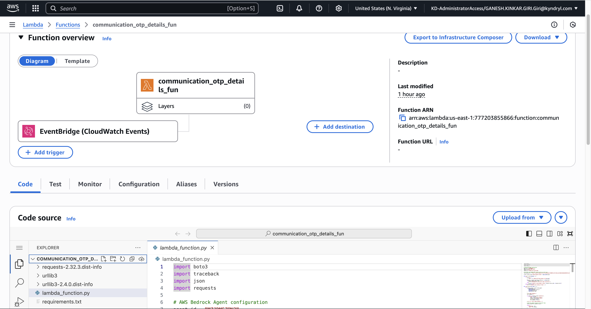
6. Upload the lambda_function.zip
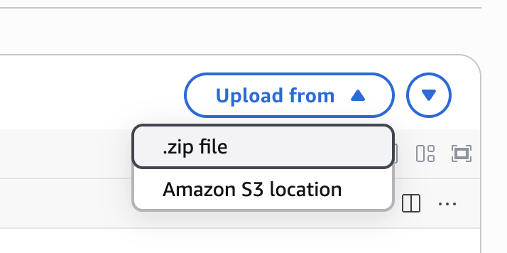
7. Add trigger with EventBridge (CloudWatch Events)
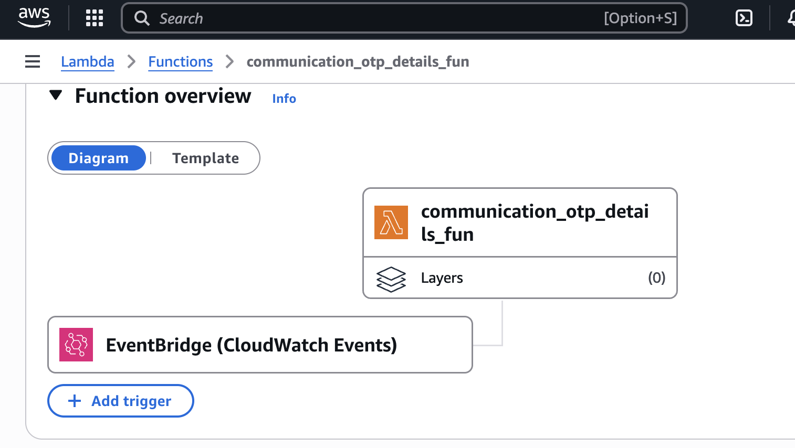
- Lambda -> Add triggers -> Trigger configuration
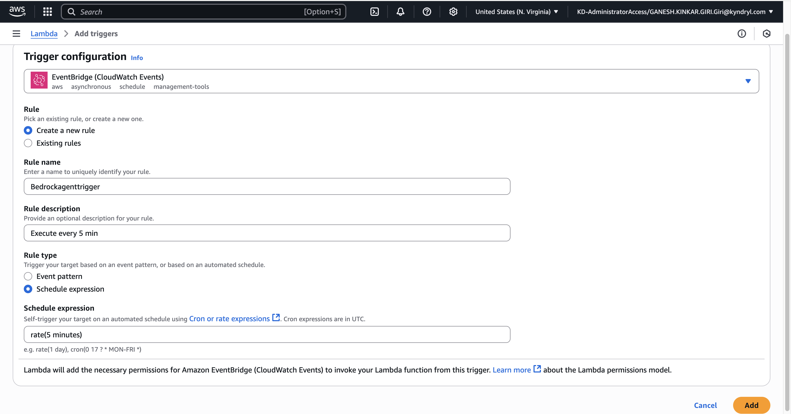
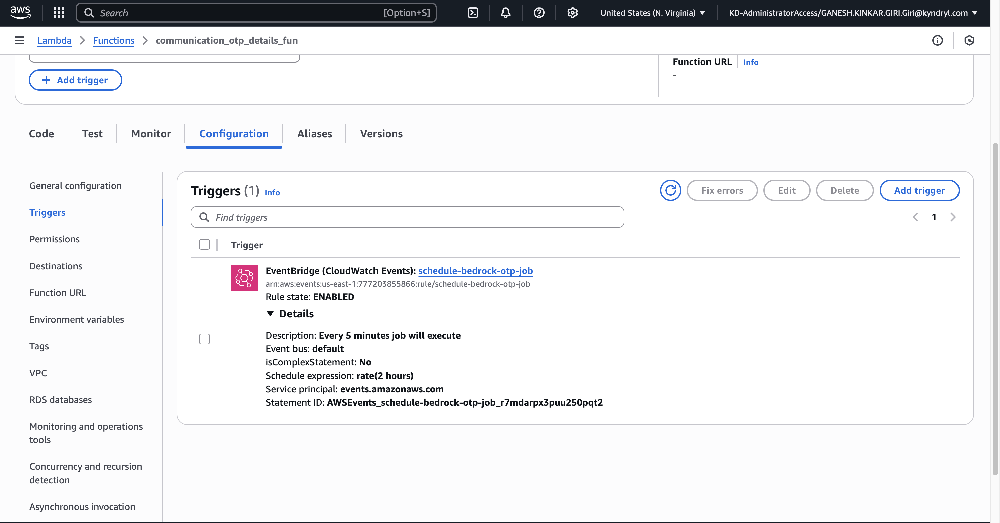
- Amazon EventBridge -> Rules -> schedule-bedrock-otp-job
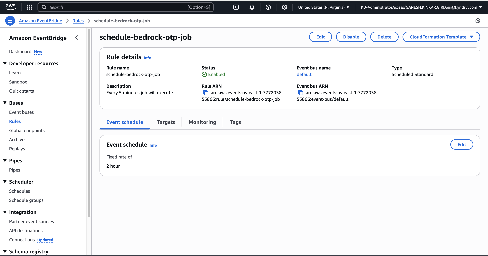
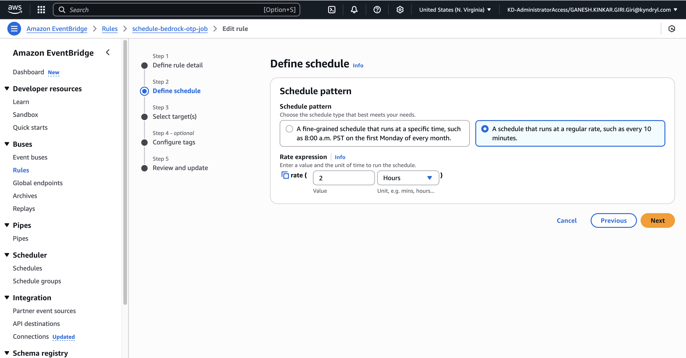
Amazon Bedrock#
We use Amazon Bedrock to orchestrate Agentic AI with foundation model support from providers like Anthropic, Amazon, Meta, and others.
AWS Documentation#
We use AWS Documentation AWS Documentation
Amazon SageMaker Documentation#
We use AWS ageMaker Documentation sagemaker
Amazon SageMaker API Reference#
We use AWS ageMaker API Documentation SageMaker API Reference